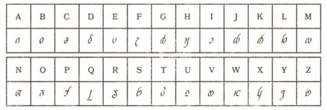
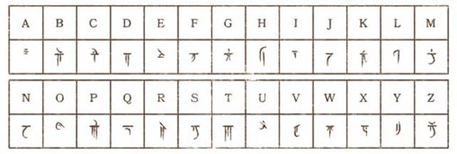

第四章：个性与背景Personality and Background
除种族和职业之外，一个角色还可以拥有更多作为补充的描述内容。作为独特的个体，他们自身的故事、兴趣、人脉和能力还可以用其他要素作定义。本章详细解释了每个角色区别于他人的各种细节，包括名字和身体特征，背景与语言的规则，以及个性和阵营的闪光点。
角色细节Character Details
你的角色首先被同桌玩家认知到的第一项信息即是其名字和生理特征描述。因而这些信息值得你仔细在脑海中构思，并考虑如何将其个性表达出来。
姓名Name
你的角色在选择种族时，可以在相应的种族描述中找到相应的命名范例。不过就算你直接从所列举的范例中选择，也值得好好考虑选择的标准。
性别Sex
你可以随意扮演男性或女性角色，并且不会因其性别差异而获得任何特殊的增益或减益。思考一下角色在接触各种文化时，对关于性别及与性别相关的行为和关系等内容时可能作出的反应。例如，一名男性卓尔成为了牧师，并因此违背了卓尔社会的性别歧视传统，这也可能令他决心离开故乡前往地表。
你不必受限于社会或自然的两性选项。精灵神柯瑞隆・拉瑞斯安Corellon
Larethian就经常以中性性别或雌雄同体的形态出现，而多元宇宙中的一些精灵正是按柯瑞隆的这种形象所创生。你同样可以扮演一个将自己视作男人的女性角色，或是一个感到自己被困在女性身体中的男人，又或是一个恨自己错生为男人的长胡子女矮人。此外，你还可以随意决定自己角色的性取向。
提卡与阿提密斯：截然不同的角色
Tika
and Artemis: Contrasting Characters
你可以按本章细节描述来讲你的角色设定得更与众不同。以下介绍两名人类战士以供参考。
在龙枪设定中活跃的提卡・维兰Tika Waylan最初只是刚渡过粗野童年的傲慢年轻人。她生为盗贼的女儿却从家中出逃，并到索拉斯镇Sloace的街道上用从父亲那学来的手艺过活。她在试图抢劫最终归宿旅店Inn of the Last Home的老板时被抓，随后便一直受老板庇护并在店里担任女招待的工作。然而随着巨龙联军将旅店连同索拉斯镇一起夷为平地，提卡只能被迫与她自幼熟知的朋友们一同开始冒险生涯。她是一名熟练的战士（最喜欢的武器是一把煎锅），而曾经混迹街头的经验更是其冒险生涯的无价之宝。
阿提密斯・恩崔立Artemis
Entreri在被遗忘的国度中卡林港Calimport的街道中长大。他靠着自己的强大的才智与身手在大片破棚屋街区里闯出了自己的地盘。年轻的阿提密斯用几年时间便成功受城中某个强大盗贼工会重用，并在其中节节高升，最终成了城中一位帕沙高官的御用刺客，并将其派遣到遥远的冰风谷以寻回一些被盗的宝石。阿提密斯是一名老练的杀手，时刻不忘在自我挑战中精进自己的技术。
提卡与阿提密斯同样是人类并同样是战士（且都有着一些游荡者的经历），且同样拥有相对较高的力量值和敏捷值，不过他们的相似点也就只到这里。
身高与体重Height and Weight
你可以根据所选种族的描述信息，或根据表格“随机身高体重”来决定角色的身高体重。设想一下角色的属性值与其身高体重的关联。一个柔弱而灵巧的角色可能会很瘦。而一个强壮坚韧的角色应该会显得高大魁梧。
你也可以使用“随机身高体重”表投骰决定角色的身高体重。身高调整值一栏中给出的投骰即是该角色超过基本身高的数值（以寸计）。这个骰值与体重调整值一栏给出的投骰或数量相乘，所得即是该角色超过基本体重的重量（以磅计）。
随机身高体重Random Height and Weight
|
种族 |
基础 |
身高 |
基础 |
体重 |
|
人类 |
4’8” |
+2d10 |
110磅 |
x (2d4) 磅 |
|
丘陵矮人 |
3’8” |
+2d4 |
115磅 |
x (2d6) 磅 |
|
山地矮人 |
4’ |
+2d4 |
130磅 |
x (2d6) 磅 |
|
高等精灵 |
4’6” |
+2d10 |
90磅 |
x (1d4) 磅 |
|
木精灵 |
4’6” |
+2d10 |
100磅 |
x (1d4) 磅 |
|
卓尔精灵 |
4’5” |
+2d6 |
75磅 |
x (1d6) 磅 |
|
半身人 |
2’7” |
+2d4 |
35磅 |
x 1 磅 |
|
龙裔 |
5’6” |
+2d8 |
175磅 |
x (2d6) 磅 |
|
侏儒 |
2’11” |
+2d4 |
35磅 |
x 1 磅 |
|
半精灵 |
4’9” |
+2d8 |
110磅 |
x (2d4) 磅 |
|
半兽人 |
4’10” |
+2d10 |
140磅 |
x (2d6) 磅 |
|
提夫林 |
4’9” |
+2d8 |
110磅 |
x (2d4) 磅 |
例如，作为一名人类，提卡身高4尺8寸加上2d10寸的身高。她的玩家投2d10得到骰值总和为12，所以提卡的直立身高为5尺8寸高。接着该玩家再使用这个骰值12乘以2d4磅。她投2d4的结果为3，所以提卡在110磅基础上加36磅，即其体重为146磅。
其他生理特征Other Physical Characteristics
你可以随意设定角色的年龄、发色、瞳色和肤色。你也可以为其设定一些特别的生理特征增强其存在感，比如一条疤痕，一条跛足或一幅刺青。
提卡与阿提密斯：角色细节
Tika and Artemis: Character Details
思考提卡・维兰与阿提密斯・恩崔立这两个名字如何使这两个角色显得特别并反映其个性。提卡是一个决意证明自己不再是孩子的少女，她的名字听起来就是个年轻的普通人。阿提密斯・恩崔立这名字则像是来自异邦，还附带着一堆的谜团。
提卡在开启其冒险生涯时年方十九，她长着红褐色的头发，绿色的眼睛，皮肤白皙而面带雀斑，其右臀上还长着一颗痣。阿提密斯是一个小个子男人，身材紧致且肌肉结实。他面容瘦削且颧骨很高，总是一副需要剃胡须的样子。他长着乌黑浓密的头发，而一双灰色的眼睛却显得毫无生机――透露着他生命与灵魂里的空虚。
阵营Alignment
D&D世界中任一个特定的生物都属于与之相应的阵营，并以此大致反映该个体的品行举止。角色的阵营由两个因素组合而成：一个确定道德（善良、邪恶、中立），另一个则描述其对社会及秩序的态度（守序、混乱、中立）。两个因素两相组合，组成了九个不同的阵营。
以下关于九阵营的简介描述了一个该阵营生物的典型行为。特定个体间的表现可能有着不小的差异，而且也很少有人能一贯完美的忠于其阵营准则。
守序善良lawful good（LG）金龙和圣武士们通常是守序善良的。
中立善良neutral good（NG）大部分天界生物都是中立善良的。
混乱善良chaotic good（CG）黄铜龙和独角兽通常是混乱善良的。
守序中立lawful neutral（LN）魔冢们和大部分法师与武僧都是守序中立的。
绝对中立neutral（N）德鲁伊是最传统的绝对中立者，城中的居民通常也是绝对中立的。
混乱中立chaotic neutral（CN）大部分游荡者与诗人都是混乱中立的。
守序邪恶lawful evil（LE）魔鬼和蓝龙通常都是守序邪恶的。
中立邪恶neutral evil（NE）尤格罗斯魔通常是中立邪恶的。
混乱邪恶chaotic evil（CE）恶魔和红龙通常都是混乱邪恶的。
多元宇宙中的阵营Alignment in the Multiverse
对于许多智慧生物而言，阵营是一种道德的选择。人类、矮人、精灵以及其他类人种族能够选择遵循善良或邪恶、守序或混乱的任何道路。据神话记载，创造这些种族的善良阵营神们让其造物们拥有自由意志以自行选择其道德之路。
阵营是天界生物与邪魔本性中的一种根源本性。这两种类型的生物都与其相关的存在位面――特别是外层位面――影响了他们的阵营。例如，大多数恶魔来自九层地狱，一个守序邪恶的位面。魔鬼不是自己选择要成为守序邪恶或趋向于守序邪恶的，而是根源本性上是守序邪恶。如果它以某种方式变得不再守序邪恶，变成别的新阵营――那就将会是一段足够有价值的，关于转变的传说。
阵营是天界生物与邪魔本性中的必要部分。一只魔鬼不是由于选择而成为守序邪恶的，而且与其说其倾向于守序邪恶，不如说守序邪恶即是其本质。如果某种情况下它不再表现守序邪恶的阵营特征，则它也就不再是一只魔鬼。
大部分缺乏理性思考能力的生物不属于任何阵营（即是无阵营unaligned）。这样的生物不能作出道德或伦理的选择，而单纯依靠其野兽本能来行动。例如，鲨鱼是凶猛的食肉动物，但并不邪恶，因此它们不属于任何阵营。
语言Languages
一般情况下，角色的种族同时还默认了其掌握的语言，而背景项则可让该角色掌握更多额外的语言。这些所掌握的语言应该记录在相应的角色卡上。
从表格“标准语言”中选出你所使用的语言，或者选择一个你战役中的常用语言。通过DM准许，你还可以从表格“特种语言”中选择一门语言或是选择一种秘密语言（例如盗贼黑话或德鲁伊语），来代替一门自选语言。
这些语言门类中实际上包含了许多同一语种的方言。例如，原初语Primordial包括了气族语Auran、水族语Aquan、火族语Ignan和土族语Terran几种方言，每种方言对应了四个元素位面之一。而说同一语种不同方言的生物，依然能够以其进行交流。
标准语言Standard Languages
|
语言 |
典型使用者 |
文字 |
|
通用语Common |
人类 |
通用语Common |
|
矮人语Dwarvish |
矮人 |
矮人语Dwarvish |
|
精灵语Elvish |
精灵 |
精灵语Elvish |
|
巨人语Giant |
食人魔、巨人 |
矮人语Dwarvish |
|
侏儒语Gnomish |
侏儒 |
矮人语Dwarvish |
|
地精语Goblin |
类地精 |
矮人语Dwarvish |
|
半身人语Halfling |
半身人 |
通用语Common |
|
兽人语Orc |
兽人 |
矮人语Dwarvish |
特种语言Exotic Languages
|
语言 |
典型使用者 |
文字 |
|
深渊语 |
恶魔demon |
炼狱语 |
|
天界语 |
天界生物celestial |
天界语 |
|
龙语 |
龙dragon、龙裔dragonborn |
龙语 |
|
深潜语 |
底栖魔鱼aboleth、蛰伏伪怪cloaker |
― |
|
炼狱语 |
魔鬼devil |
炼狱语 |
|
原初语 |
元素生物elemental |
矮人语 |
|
木族语 |
妖精fey creature |
精灵语 |
|
地底通用语 |
幽暗地域商人 |
精灵语 |
*深渊语Abyssal、炼狱语Infernal、天界语Celestial、龙语Draconic、原初语Primordial、木族语Sylvan、地底通用语Undercommon、深潜语Deep Speech。
提卡与阿提密斯：阵营
Tika and Artemis: Alignment
提卡・维兰属于中立善良阵营，她会本着一副好心肠随时随地竭力的帮助他人。阿提密斯则属守序邪恶，他对于智能生物的性命漠不关心，但至少在其谋杀手法十分的专职。
作为邪恶一方的角色，阿提密斯并不是理想的冒险者。他的生涯在一开始就是一名恶棍，而他也仅会在必要时才与其他英雄合作――且只在他最感兴趣时合作才成立。大多数游戏里，邪恶冒险者会在团队的兴趣目标与自己相左时引发问题。因此通常情况下，只有反派和怪物才会出现邪恶阵营的角色。
人物特征Personal Characteristics
赋予一系列特质、癖好、习惯、信仰和缺陷可让你的角色形象更丰满，且可以此在游戏进行时让角色更真实生动。以下列举出人物特征的四方面：特点、理想、牵绊和缺点。除此四点外，你还可以考虑为角色设计一些爱用的话句或短语，一些反复性或习惯性动作，一些恶习或心病，或任何其他你想象到的特点。
囊括在本章后半部的每个背景都包括了一些可以直接使用的人物特征建议。你也可以以之为基础发挥自己的想象，而不必受限于这些选项本身。
个性特点Personality Traits
为你的角色赋予两项特点。这些简单的小描述可以让你的角色区别于其他角色。角色的特点必须是能够概括该角色吸引人或者娱乐人的某些方面。它们必须是该角色自述的某项令其自己更显眼的事情。比如“我很聪明”就由于过于泛泛而不能算一项好特点。而“我读过烛堡的每一本书”则可以为你概括出角色的一些兴趣与性情。
特点可以描述该角色喜欢的事物，其过去的成就，其讨厌或害怕的事物，角色的待人态度或习惯，或者是源于其属性值的某些影响。
构思角色特点的一个可行方法是从角色最高和最低的属性值出发，为这两个属性分别设置一个相关联的特点。这两个特点可以随意设计成正面或是负面：比如你可能会想要努力锻炼克服某项低属性，或是因某项高属性而自大自满。
理想Ideals
为你的角色描述一个理想。这个理想是该角色最强烈的信念，是从道德上和伦理上指引其行为的原则。角色的理想可以小到生活目标，大到核心信仰体系等任何事物。
理想可以作为某些问题的答案：什么是你绝不会违背的原则？什么能促使你作出牺牲？什么驱动了你的行动并指引你的目标与追求？什么是你最想为之努力的一件事物？
你可以随意选择你喜欢的理想，或者也可以从角色的阵营出发思考其理想。本章所述的每个背景都给出了六项理想范例。其中五个与某个阵营相关：守序、混乱、善良、邪恶和中立。最后一条会与相应背景项相符而不与道德或伦理相关。
牵绊Bonds
为你的角色设置一个牵绊。这个牵绊是该角色与其世界上的人物、地点和事件的联系。这种联系将你与所处的背景绑定。一旦其承受威胁，则可能令你奋起努力或是瞬间激发英雄气概，又或是使你性情大变。某种方面来讲，牵绊会以与理想相似的方式驱动角色的动机与目标。
牵绊可以作为某些问题的答案：谁是你最关心的人？哪个地方能使你感受到某种特别的联系？什么是你最珍视的所有物。
角色的牵绊可以关联其职业，背景，种族，又或者关联该角色的过去和性格等其他方面。此外你在冒险旅途中也可能产生新的牵绊。
缺点Flaws
最后，为你的角色选择一个缺点。角色的缺点指代某项恶行，冲动，恐惧或弱点――最好是某些能被利用来将你推进坟墓或是令你性情大变的事情。跟负面的角色特点相比，缺点可以作为某些问题的答案：什么可以激怒你？哪些是你所惧怕的人物、想法或事件？你的恶习是什么？
提卡与阿提密斯：人物特征
Tika and Artemis: Personal Characteristics
提卡与阿提密斯有着鲜明的人物特征。提卡・维兰讨厌自夸，且因曾经某次作贼时失足而落下恐高的毛病。阿提密斯・恩崔立总是习惯先作最坏打算，且总是迅速而精确的把握状况后再付诸行动。
而关于他们的理想：提卡・维兰是个天真的人，有时候几乎就是个孩子。她重视生命本身以及每个人的存在价值。其中立善良阵营也代表了她坚守生命与尊重至上的理想。阿提密斯・恩崔立从不会让情绪左右自己，并且常常自我挑战来精进自己的技术。其守序邪恶阵营也代表了他公平和渴求力量的理想。
提卡・维兰的牵绊是最终归宿旅店。遇到旅店老板是她生命中的一个转折点，而她与冒险伙伴的友谊也是建立在其旅店工作时期。旅店被巨龙联军的劫掠所摧毁的事实，为提卡对其强烈的憎恨提供了一个非常合理的个人理由。她的牵绊可以说成“为了让摧毁最终归属旅店的巨龙联军受到惩罚，我愿意做任何事情。”
阿提密斯・恩崔立的牵绊是与崔斯特・杜恶登间一段怪异且近乎反常的关系。当他与对手，那个剑术和信念都与其旗鼓相当的崔斯特完成他们第一场战斗后，阿提密斯就从其对手身上看到了自己的影子，让他看到了自己可以过上与这位卓尔英雄相似人生的可能性。自那一刻起，阿提密斯就不再是一名单纯的罪恶刺客――他被这种对崔斯特的执着驱使，成为了一名反派英雄。他的牵绊可以说成“我在证明自己比崔斯特・杜恶登更强之前绝不休息。”
这两名角色都分别有一项严重的缺点。提卡・瓦维兰天真而多愁善感，并且时常苦恼于因在同伴中年龄最小而时常被当作还是个孩子。为证明自己能够独当一面，她可能会受鼓动做出某些违背自己原则的事。阿提密斯・恩崔立则完全隔绝任何私人关系，独断独行。
激励Inspiration
激励是一项由DM视情况运用的额外奖励规则，用以帮助角色在扮演中凸显其个性特点、理想、牵绊以及缺点。通过使用激励，在与乞丐王子Beggar Prince交涉时，你能因同情压迫者的个性而与之针锋相对；或是面对某个法术效应时，因你保卫家乡的牵绊而强行避开伤害。
获得激励Gaining Inspiration
你的DM可以用各种理由给予你激励。典型的范例如：你在扮演时凸显了角色的个性特点；由于缺点或牵绊而使角色不得不屈服；甚至是生动的诠释你所扮演的角色时，DM都可以酌情给予你奖励。具体情况皆由你的DM对其作出解释。
面对某件事情时，你只会是有或者没有激励。“激励”无法积累起来留待后用。
使用激励Using Inspiration
你获得的激励，可以用于你的一次攻击检定，豁免检定或属性检定。使用激励可以使你的该次掷骰具有优势。
另外，你所拥有的激励可以使用在其他玩家身上，用以协助其更好的扮演角色，或是用于一个巧妙的时机，又或者只是用来让游戏显得更有意思。当你觉得另一位玩家角色的行为让故事发展变的更欢乐更有趣时，你可以考虑将自己的激励给予该角色以推动故事发展。
背景Backgrounds
每个故事都有一个开头。角色的背景项解释了其来历，如何成为一名冒险者，以及其在世界中的地位。你的战士可能曾经是一名勇敢的骑士或一名爱哭爱抱怨的士兵。你的法师可能曾经是一名贤者或一名工匠。你的游荡者可能曾经是一名公会盗贼或是一名蛊惑大众的宫廷弄臣。
选择一个背景为你提供了关于该角色身份的重要故事提示。该背景所述的关键问题是：什么发生了变化？你是由于什么原因而放弃背景所描述的生活转而开始了冒险？你如何获得你的起始装备？或者，如果你曾经富有，为何你没有更多的钱财？你如何学会现在的职业技能？又是什么让你与故乡里的普通人有所区别？
以下的背景范例既提供了相应的具体增益（特性、熟练项以及语言）又提出了相应的角色扮演建议。
提卡与阿提密斯：背景
Tika and Artemis: Backgrounds
提卡・瓦兰和阿提密斯・恩崔立早年都是作为流浪儿混迹在街头。提卡之后的女招待生涯并没有改变其本性，因此她可能会选择流浪儿背景，并以此获得巧手与隐匿技能的熟练项，并且学会使用盗贼赖以谋生的工具。阿提密斯则更受其罪犯背景所影响，并因此掌握欺瞒与隐匿技能，同时还熟悉盗贼工具和制毒工具的使用。
熟练项Proficiencies
每个背景给予两个技能的熟练项。关于技能详见第7章。
另外，大多数背景都会给予角色一种或多种工具的熟练项。关于工具熟练项的内容详见第5章。
如果一个角色以两种不同的方式获得同样的熟练项，则该角色可以选择以相同种类（技能或工具）一个不同的熟练项作替代。
语言Languages
某些背景还允许角色掌握其种族语言外的额外语言门类。见前文的“语言”栏目。
装备Equipment
每个背景提供一份起始装备。如果你选择使用可选规则用货币购买装备，则无法同时从背景项中获得起始装备。
建议特征Suggested Characteristics
每个背景项的描述中包含了基于该背景的人物特征建议。你可以在其中自选其特征，或掷骰以随机决定，甚至可以参考建议自创一项人物特征。
自定义背景Customizing a Background
你可能会想要改变一些背景中的特性，以使其更好地适合角色或战役设定。自定义背景时，你可以从范例背景出发，随意替换其中一项特性，任选两项技能，并任选总计两项工具熟练项或语言项作类似的替换操作。你可以直接使用背景中给出的装备项，或者参照第5章的内容使用货币进行购买，只是使用货币购买时不能同时获得你的职业起始装备。最后，你可以选择两个特点，一个理想，一个牵绊和一个缺点。找不到符合背景需求的特性时，你还可以跟你的DM商量自创一个。
矮人语文字字母范例

精灵语文字字母范例

龙语文字字母范例
